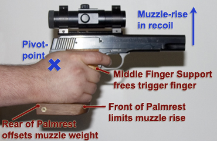

The Benefits of Custom Grips
SPECIAL THANKS TO RANDALL FUNG
FOR HIS RESEARCH DATA AND ILLUSTRATIONS!
Introduction:
In much the same fashion that a champion long distance runner
values well-designed shoes, the competitive pistol shooter must
consider the grips on his pistol. Recognize that the grips are
the direct link between a shooter and his weapon, and grip design
is critical if maximum control is desired. No shooter can be
successful unless he can take a firm, yet relaxed grip on his
pistol that is identical each time. Likewise, he must be able to
hold directly on target without any movement while pulling the
trigger through its break and then be able to quickly recover
after recoil. Well designed and fitted custom grips encourage
this process to become automatic. Veteran champion shooter Gil
Hebard has praised custom anatomical grips as being "worth
every cent," and he is right.
The Psychological Advantage
of Custom Grips:
While an accurate pistol is an important part of the equation of
becoming a great shooter, overcoming the common fundamental
errors is far more significant. Most shooters do not shoot to the
capabilities of their target pistol, regardless of its make or
model. When one reaches a certain level of competence, pistol
shooting becomes more of a mental challenge than a physical one.
Your mental state greatly affects your performance at the
competing levels and is certain to be affected by your subjective
feelings about your equipment. If you can possibly blame your
equipment and its functionality, there will be an adverse effect
on your confidence and performance. However, if you have the
utmost confidence in your equipment, you will perform to your
best ability. If your pistol's grips fit you like a glove, then
of course you will have confidence, thus eliminating worry over a
vast many fundamentals. Even the aesthetics of your equipment can
contribute to your performance.
The Mechanics of Anatomical
Grips:
A key attribute of anatomical grips is the ease in taking an
identical hold on the pistol every time. This is a huge factor in
consistency and proper technique in every stage of the game. This
feature, control of the placement of the web of the hand, is
easily achieved by two separate elements of the grips, the
palmrest and the thumb cutout. If the grips are fitted properly,
one gets the impression that his pistol is merely an extension of
his hand.

Another primary function of anatomical grips is to allow you to "clamp" your hand to the gun, and yet allow your trigger finger to operate independently. This is particularly important with pistols that are muzzle or top heavy. Two elements, the palmrest and the middle finger support, work together in this task. Hand contact with the rear of the palmrest and upward contact by the middle finger help offset the forward balance of the muzzle providing increased stability with less strain.After a shot has been fired, the effects of recoil come into play. Various angles of force effect the direction of the recoil and these must remain very consistent in order to achieve small groups. Likewise, the recoil affects your grip and the slightest roll or movement can change the angles of force effecting the recoil for the following shot. Unless you compensate consciously, or subconsciously for this difference, you might get a shot placement other than you expected, or a "flyer." As the shot breaks, the upward climb of the barrel in recoil, or muzzle jump, is limited by the overhang on the rear of a pistol. But that is not sufficient because the overhang is quite close to the "pivot point" of recoil. This is another task for the palmrest, whose function now is not only to keep the hand secure between the overhang and itself, but by making contact with the little finger, limits the upward pivot of the muzzle.
Manufacturers of Anatomical Grips:
In the case of European pistols, models intended for competition are usually equipped with anatomical grips. Provided that they fit your hand comfortably and are adjustable, they will suffice. For those not equipped with anatomical grips, there are plenty of manufacturers at your disposal. Here are the most popular:
Randall Fung Match Grips. San Francisco, CA. Available directly from Randall.
Thomas Rink Formgriffe. Germany. Available through Larry's Guns.
Morini Grips. Switzerland.
Nill Griffe. Germany.
.